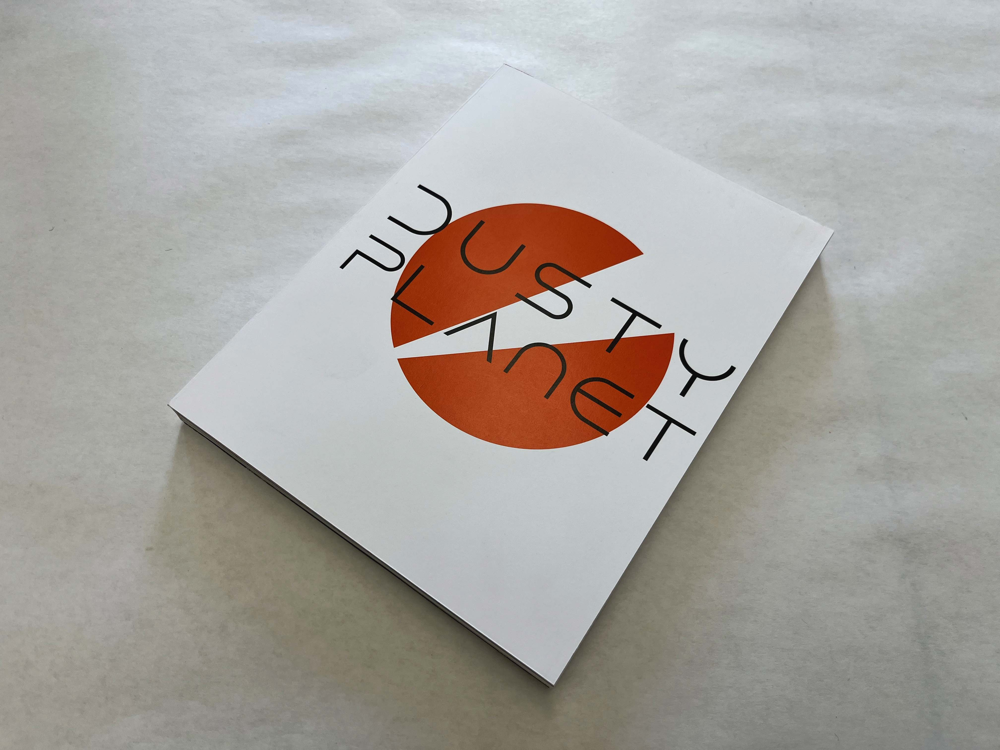
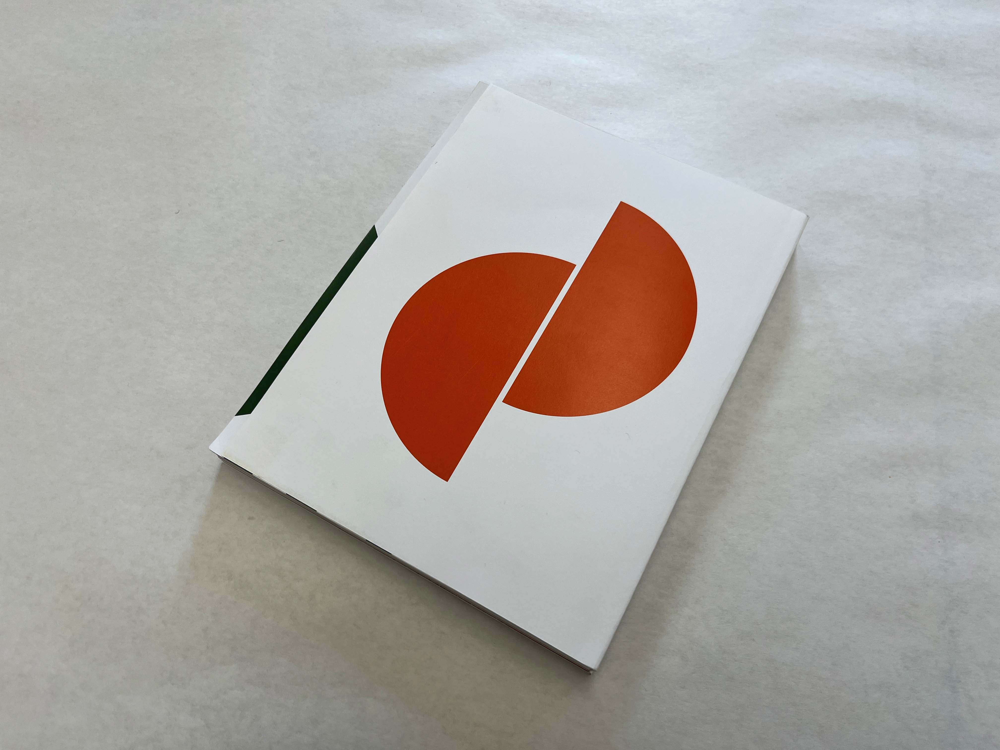
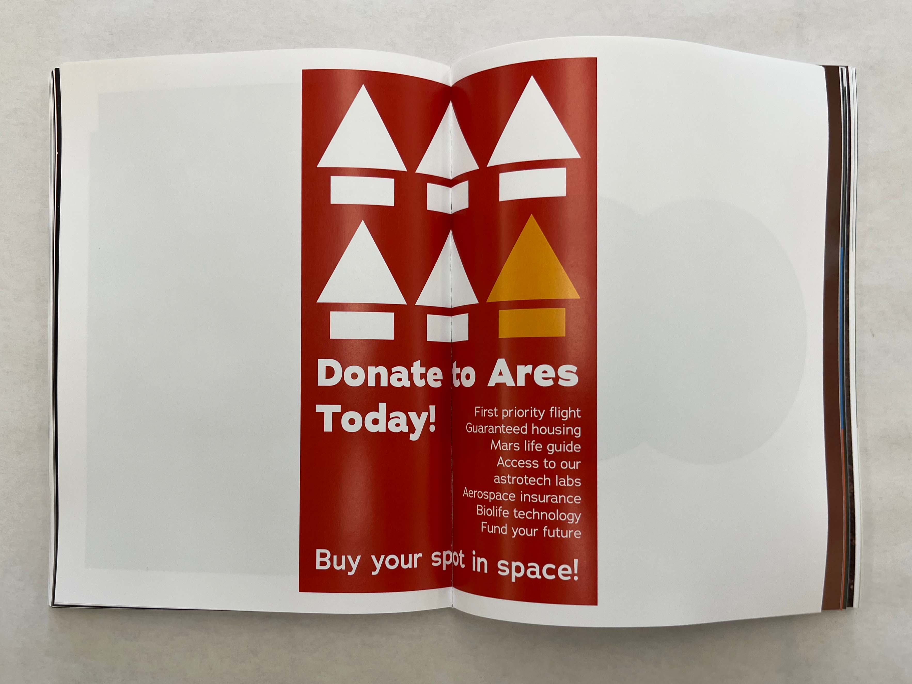
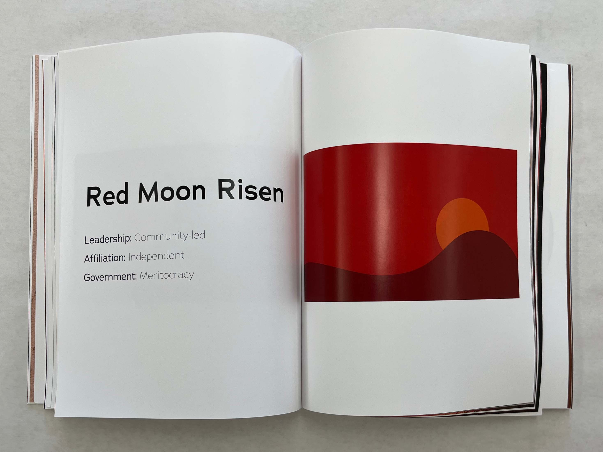
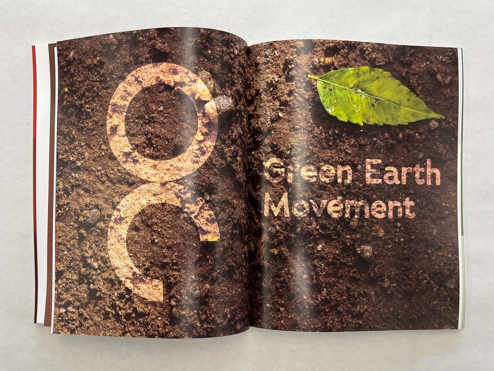
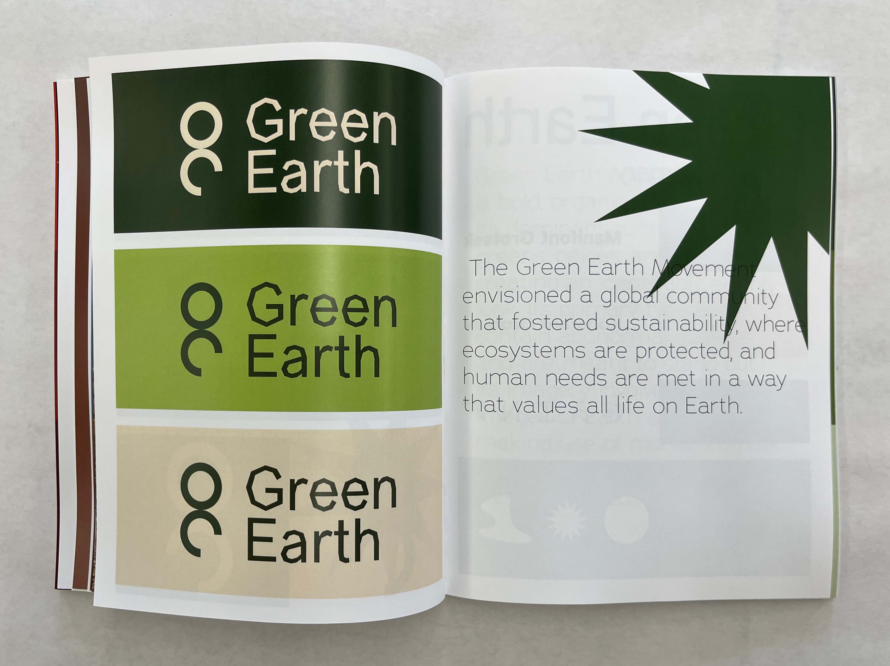
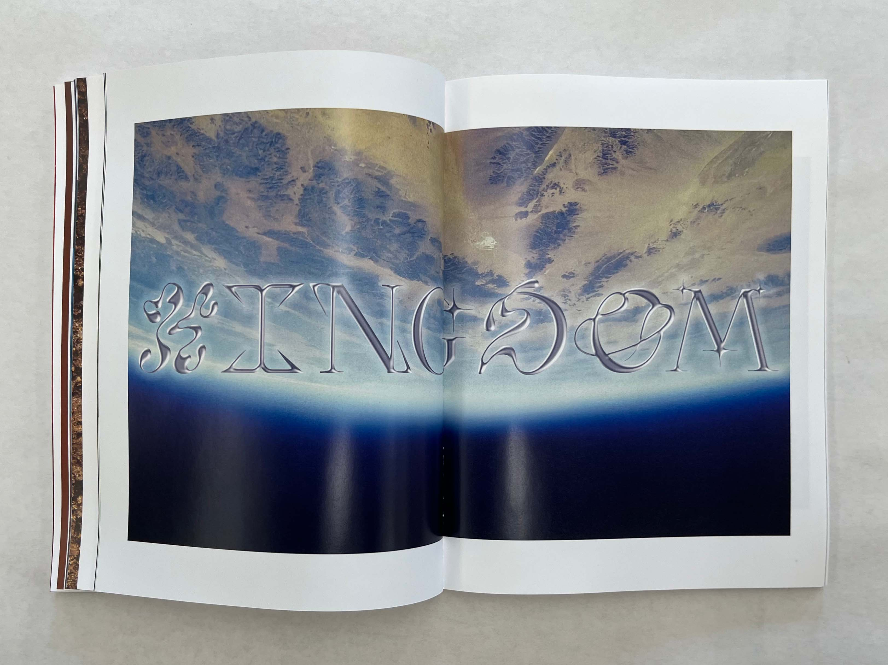
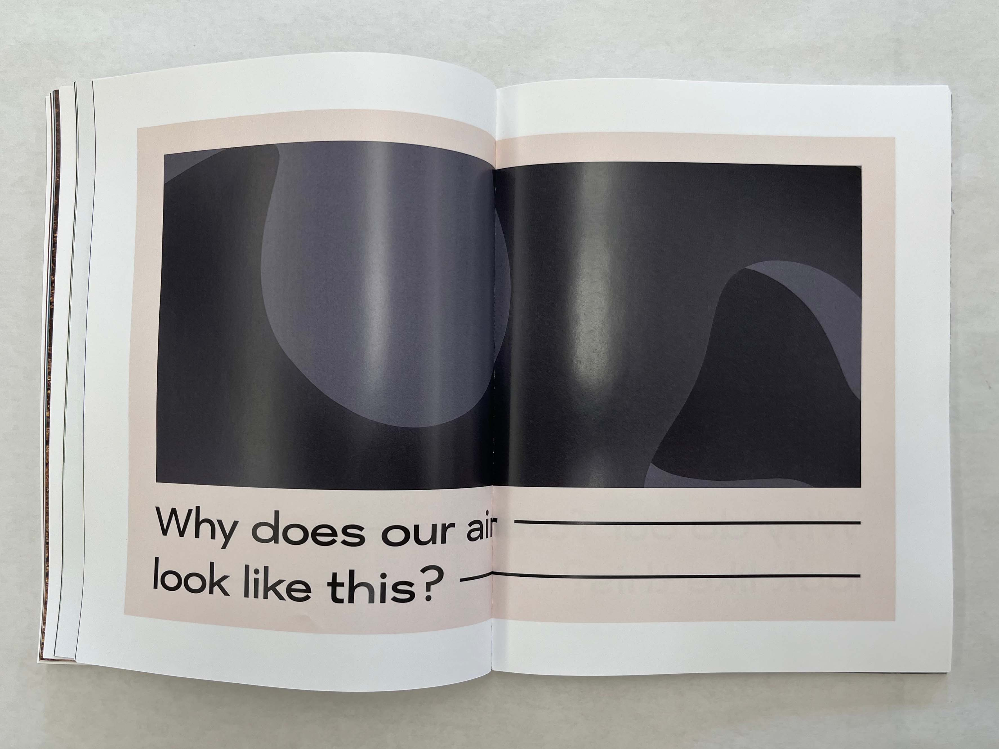

A 250-page artbook centered around a speculative future in which global warming has progressed to a near unlivable state, and Earth's wealthy class has begun to flee to Mars in order to create a new society. The book is built upon iteration and repeated ideas, and highlights the role of visual marketing in propganda and mass manipulation.







